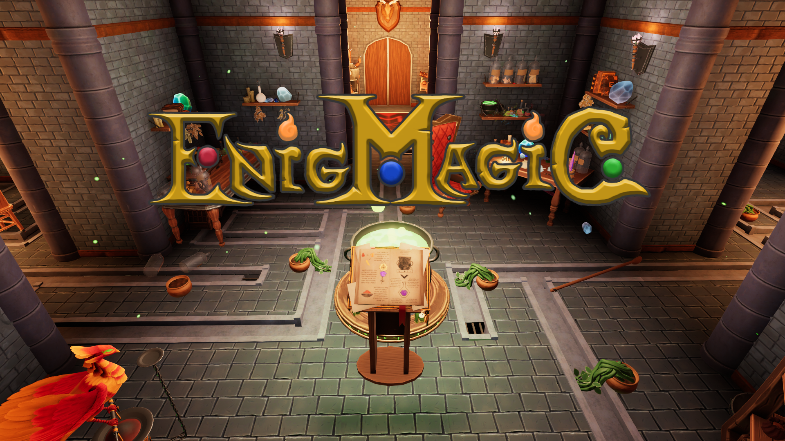
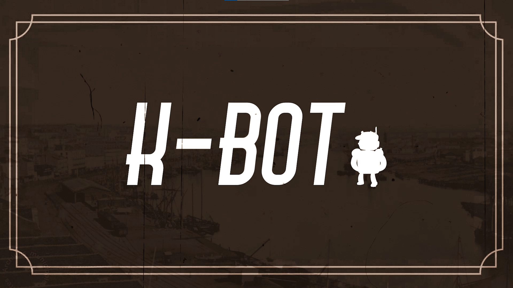
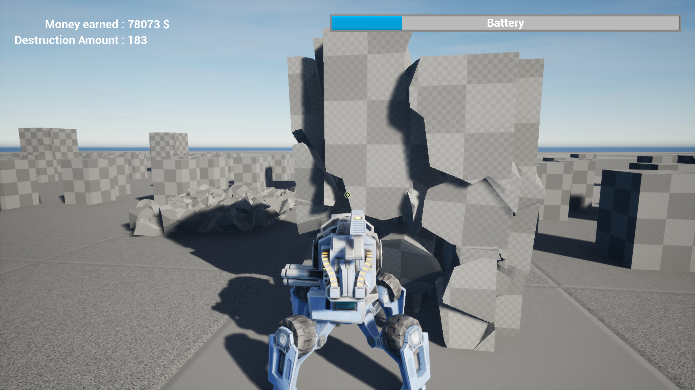
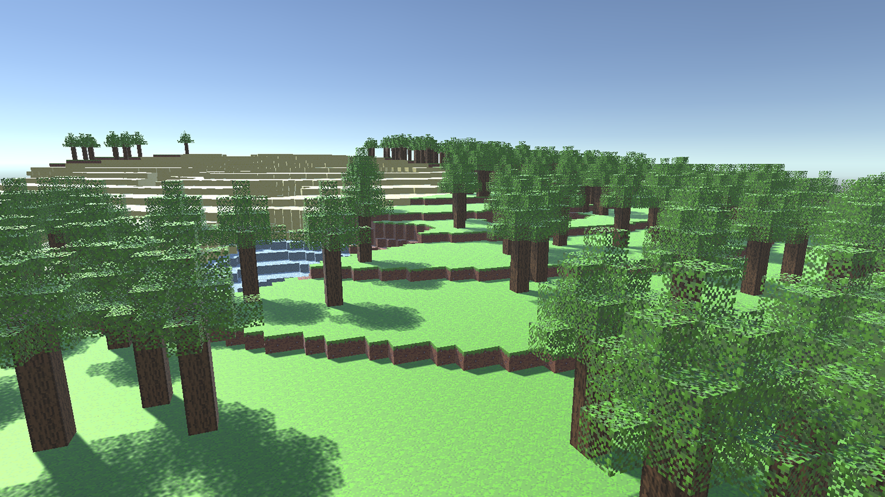
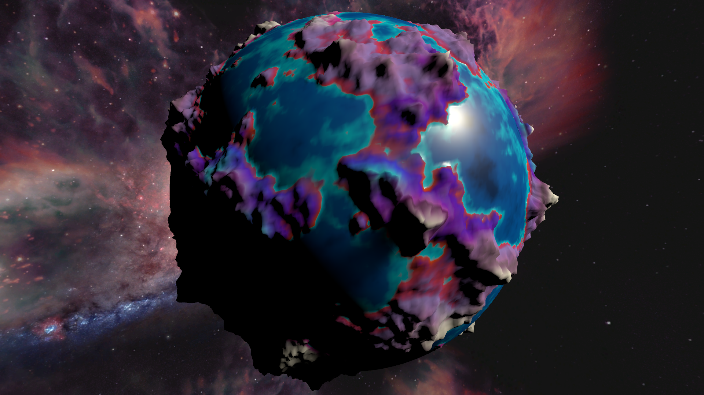

Mes jeux
-

Enigmagic
Enigmagic est actuellement la plus grosse production à laquelle j’ai participé, c’est un escape game magique en VR que j’ai produit avec la collaboration de 9 collègues pour notre fin de cursus à E-Artsup. J’ai travaillé principalement en tant que chef de projet, lead développeur et développeur. J’ai également aidé l’équipe graphique pour les VFX ainsi que l’intégration. Le gros de ma production est centré sur les sorts et les intéractions du joueur.
file_download Téléchargement indisponible
-

K-Bot
K-Bot est un puzzle-platformer en 3D dont le but est de détruire son personnage pour progresser. Il a été produit en fin de 2ème année à E-artsup, j’ai principalement participé à la création des contrôles et mouvements du personnage, ainsi que la plupart de ses capacités de destruction. J’ai également participé à la création du niveau principal du jeu, l’usine.
file_download Télécharger le jeu
-

KOMROG
Komrog est un projet de rogue like en 2D dont le but est d'eplorer un donjon tout en récupérant des améliorations pour son arme et son personnage jusqu'à atteindre la fin du jeu.
file_download Télécharger le jeu
-

Galactic Jumping
Galactic Jumping est un jeu en 2D créé en 3 jours à l'occasion d'un workshop. On contrôle un petit astronaute qui doit s'aider de la gravité des planètes pour atteindre la fin des niveaux !
file_download Télécharger le jeu
-

City destroyer
Un projet de mecha qui détruit “Une ville” pour s'améliorer et en détruire encore plus ! C’est un projet que j’ai réalisé seul, le but était de réussir à utiliser le système de Chaos d’Unreal Engine.
file_download Télécharger le prototype
-

Projet Tron
Le projet Tron est un jeu réalisé en cours. C'est un jeu de versus en 3D de 2 à 4 joueurs ou l'on contrôle une moto et dans lequel on doit éliminer les autres joueurs en leur passant devant grace à une trainée. On est aussi aidé par des power-up qui se génèrent sur le terrain.
file_download Téléchargement indisponible
-

Sentry-dawn
Sentry dawn est un jeu créé lors de la Global game jam 2020, c'est un tower defense où le joueur doit aller lui-même construire ses tours et récupérer l'argent qui apparait sur la carte.
file_download Télécharger le jeu
-

Generation procédural
Ce projet qui ressemble au clone de Minecraft est un projet que j’ai réalisé dans le but d’apprendre le fonctionnement de la génération procédurale en voxel.
file_download Téléchargement indisponible
-

Planète procédural
J’ai réalisé ce projet seul en me mettant au défi de générer une planète procéduralement et que l’on puisse descendre à sa surface tout en gardant une qualité correcte autour de la caméra. Pour ce faire, j'ai donc créé un système de LOD qui fonctionne pour un espace comme une planète.
file_download Télécharger le prototype
-

Memories Uncovered
Memories Uncovered est un jeu créé lors de la Global Game jam 2021, elle met en scène un personnage qui cherche ses souvenirs dans un labyrinthe généré aléatoirement alors qu'il est poursuivi par des monstres.
file_download Télécharger le jeu
Mes autres productions
Des VFX réalisé pour le jeu Enigmagic


-
Level design - K-Bot - Les différents plans

Voici quelques plans réalisés pour le level design du jeu K-Bot.


-
Level design - Generation Procédurale
Voici quelques images supplémentaires de la génération procédurale en voxel.
-
Level design - Planète procédurale
Voici quelques images supplémentaires sur le projet de planète procédurale.
-
Level Design - Nouveau donjon de Zelda Wind Waker
Voici un aperçu des plans ainsi que de la réalisation en 3D d’un donjon théorique de The Legend of Zelda The Wind Waker que j’ai réalisé pour m'entraîner au level design. Tout ceci prend en compte la difficultée et son emplacement dans le jeu (en tant que 3ème donjon) ainsi qu’un raccordement à l’histoire qui soit logique.